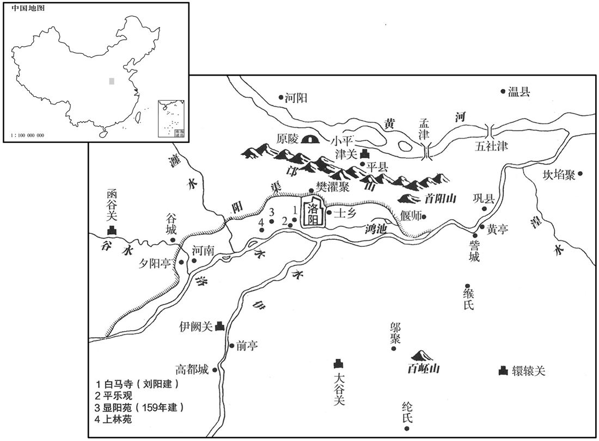

公元58年资治通鉴：本年记事、原文与白话对照
按原书编年位置阅读；追叙和史论不等于本年发生的事件。白话采用所据译本，缺译不以生成译文补齐。
卷44 · 本年记事
公元58年 · 汉世祖光武皇帝永平元年
永平元年〔（戊午、五八）〕

本年形势与背景参考图
春，正月，帝率公卿已下，〔已下，即以下。孔颖达曰：已与以字本同。〕朝于原陵，如元会仪。〔朝陵如元会仪，事死如事生也。朝，直遥翻。〕乘舆拜神坐，〔乘，绳证翻。坐，徂卧翻。〕退，坐东厢；侍卫官皆在神坐后，太官上食，〔上，时掌翻；下同。〕太常奏乐；郡国上计史以次前，当神轩占其郡谷价及民所疾苦。是后遂以为常。
春季，正月，明帝率领公卿及百官在原陵朝拜，如同光武帝生前举行元旦朝会的仪式。明帝先在光武帝的牌位前叩拜，然后退下，坐在东厢。侍卫官全都围列在牌位之后，由太官献上御膳，太常演奏乐曲。各郡、各封国呈送年终考绩的官员——上计吏依次上前，在供奉光武帝牌位的大堂上奏报本地的粮价和人民疾苦之事。从此以后，这项仪式便成为固定的常例。
夏，五月，高密元侯邓禹薨。〔谥法：行义说民曰元；主义行德曰元。此特以邓禹中兴元功而谥之耳，后世谥法始有茂德丕绩曰元。〕
夏季，五月，高密元侯邓禹去世。
东海恭王强病，上遣使者太医乘驿视疾，骆驿不绝。〔驿，传递马也。左传谓之乘驲者，乘驿马也，西汉谓之置传、驰传。骆驿，往来不绝也。〕诏沛王辅、济南王康、淮阳王延诣鲁省疾。〔省，悉景翻。〕戊寅，强薨，临终，上书谢恩言：「身既夭命，孤弱复为皇太后、陛下忧虑，〔言身既夭死，而子孙贻上之人忧虑心。夭，于绍翻。复，扶又翻；下同。〕诚悲诚凓！息政，小人也，〔息，子也；政其名。〕猥当袭臣后，必非所以全利之也，愿还东海郡。今天下新罹大忧，〔谓光武崩也。〕惟陛下加供养皇太后，数进御餐。〔供，居用翻。养，羊亮翻。数，所角翻。〕臣强困劣，言不能尽意，愿并谢诸王，不意永不复相见也！」帝览书悲恸，从太后出幸津门亭发哀，〔贤曰：津门，雒阳城南面西头门也，一名津阳门。每门皆有亭。李尤铭，津门位未。〕使大司空持节护丧事，〔百官志：司空掌水土事；大丧，掌将校复土。今使护藩王丧，殊礼也。〕赠送以殊礼，诏楚王英、赵王栩、北海王兴及京师亲戚皆会葬。〔栩，况羽翻。〕帝追惟强深执谦俭，〔惟，思也。〕不欲厚葬以违其意，于是特诏：「遣送之物，务从约省，衣足敛形，〔敛，力赡翻。〕茅车瓦器，物减于制，以彰王章尔独行之志。」将作大匠留起陵庙。〔秦曰将作少府，景帝改为将作大匠；掌修作宗庙、路寝、宫室、陵园土木之工，并树桐梓之类，列于道侧。〕
东海恭王刘强病重，明帝派使者和太医乘驿车前往诊治疾病，车马络绎不绝。明帝还下诏命令沛王刘辅、济南王刘康、淮南王刘延去东海国首府鲁城探望刘强的病情。五月戊寅（二十二日），刘强去世。临死前，他曾上书叩谢皇恩，书中写道：“我自身已是短命，留下的孤儿寡妇还要让皇太后和陛下操心忧虑，我真是又悲伤又惭愧！我的儿子刘政是个幼童，本当勉强继承我的爵位和封土，但这必定不是保护他的万全之计，我请求交还封国，将东海国恢复为东海郡。如今天下刚刚经历了大变故，我盼望陛下加倍奉养皇太后，多进餐饭。我困顿衰颓，言辞不能表达全部心意，愿一并向各位亲王辞别，想不到我们永远不能再相见了！”明帝见到遗书，十分悲痛，跟随太后出城，临幸津门亭，为刘强举哀。明帝命令大司空持御赐符节督治丧事，对刘强的赏赐赠送超过通常的礼仪，下诏命令楚王刘英、赵王刘栩、北海王刘兴以及在京城的亲戚们都去参加葬礼。明帝追念刘兴以及在京城的亲戚们都去参加葬礼，明帝追念刘强坚持谦恭节俭，不愿违背他的原意实行厚葬，于是发布特诏：“东海王的随葬物品，务必符合简单俭省的原则，寿衣足以包住身体即可，要用茅草之车，陶瓦之器，物品少于通常制度，以此显示东海王卓尔不群独行特立的志节。”并命令将作大匠留在东海国兴建王陵祭庙。
秋，七月，马武等击烧当羌，大破之，余皆降散。〔降，户江翻。〕
秋季，七月，马武等攻打烧当羌，烧当羌大败。一同叛乱的其他羌人部落全部投降或逃散。
山阳王荆私迎能为星者，与谋议，冀天下有变；帝闻之，徙封荆广陵王，〔遣之国。郡国志，广陵，在雒阳东一千六百四十里。〕
山阳王刘荆下聘请利用星象占险吉凶的星家，与他们一同谋划，希望天下发生变乱。明帝听说此事，便将刘荆改封为广陵王，命他前往广陵国。
辽东太守祭肜使偏何讨赤山〔偏氏，高辛后。急就章有偏、吕、何。〕乌桓，〔乌桓传：赤山，在辽东西北数千里。鲜卑传云：偏何击渔阳赤山乌桓钦「歆」志贲。盖歆志贲本赤山种而居渔阳塞外也。〕大破之，斩其魁帅。〔帅，所类翻。〕塞外震詟，〔詟，之涉翻。〕西自武威，东尽玄菟，〔郡国志：武威郡，在雒阳西三千五百里。玄菟郡，在雒阳东北四千里。菟，同都翻。〕皆来内附，野无风尘，乃悉罢缘边屯兵。
辽东郡太守祭肜派鲜卑首领偏何讨伐赤山的乌桓部落，大败乌桓人，斩杀其首领。塞外震恐，西起武威郡，东到玄菟郡，各异族部落都来归附汉朝。边疆不再有烽烟与战尘，于是东汉朝廷将屯驻边境的军队全部撤走。
东平王苍以为中兴三十余年，四方无虞，宜修礼乐，乃与公卿共议定南北郊冠冕、车服制度〔光武建武二年，立南郊。中元元年，立北郊于雒阳城北四里。今定其冠冕、车服制度。汉官仪曰：北郊坛在城西北角，去城一里所。〕及光武庙登歌、八佾舞数，上之。〔记曰：歌者，在上贵人声也，天子乐舞八佾，六十四人，八八六十四人也。佾，音逸，舞行列也。上，时掌翻。〕
东平王刘苍认为东汉中兴三十多年，四方安宁无忧，应当建立礼乐制度。于是，他和公卿一同商讨制定了在京城南效祭天、北郊祭地时所用的冠帽、车马、衣服等制度，以及祭祀光武庙时所用的歌乐和八佾舞的形式，向明帝呈报。
好畤愍侯取弇薨。〔时，音止。谥法：在国遭忧曰愍。时国有大丧，故以谥弇，言与国同戚也。弇，古含翻。〕
本段缺少可靠对应白话，原文完整保留；未使用生成译文。
译本中未与胡注本可靠对应的内容
以下另列供核对版本差异，不并入胡注本正文。
译本所附古文
[8]好愍侯耿薨。
译本白话
好愍侯耿去世。